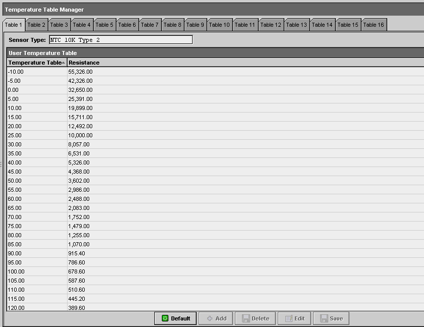
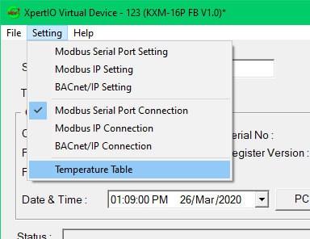

mekiTempTable
- TempTable
- 
TempTable is an object for user to define the temperature sensor table resistance value versus the temperature value according to the manufacturer specifications. User may use this object if any of the preset objects in this kit is not suitable.The property sheet of the object is shown below.
The temperature table setting can be done in Virtual Device Software, under menu Setting->Temperature Table.
- Parameters:
Table –
Table is referred to the temp table from number 1 to 8 where it is user customizable. Table 9 to 16 is predefined table and is not editable. Table 9 to 16 is preset to temp table as below image.
Analog Input Temperature Table Selection
Temperature Table Index
Type of Temperature Sensor
1-8
User defined Table 1-8 (default = table 9-16)
9
NTC 10K Type 2
10
NTC 10K Type 2 Shunt 11K
11
NTC 10K Type 3
12
NTC 10K Type 3 Shunt 11K
13
NTC 3K
14
NTC 20K
15
RTD 1K Platinum
16
RTD 1K Balco
Temperature (real) – Temperature value tied back to Resistance (30 lines)
Resistance (real) – Resistance value tied back to Temperature (30 lines)
Default (function) – Restore function to default settings
Add (function) – Increase function for the temperature and the resistance of the contrast relationship, in less than 30 groups
Delete (function) – Delete function for the temperature and the resistance of the contrast relationship
Edit (function) – Edit function for the temperature and the resistance of the contrast relationship
Save (function) – Save function for modified content
{kind=link}
{kind=link}